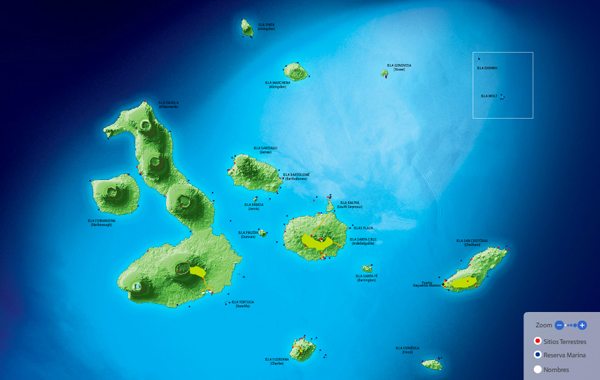
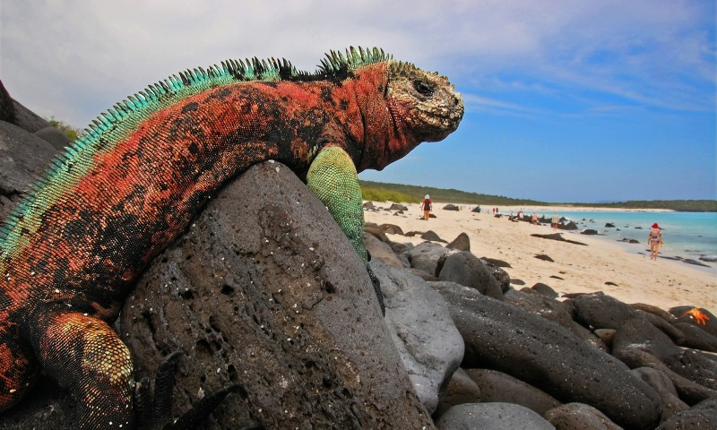
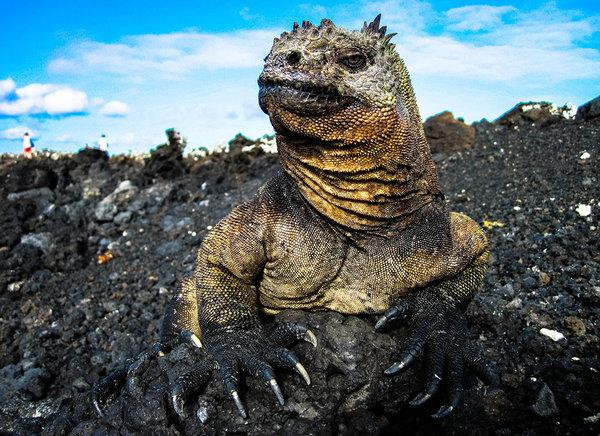
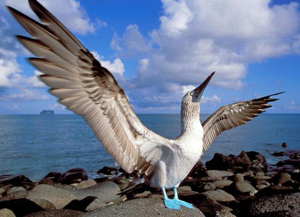
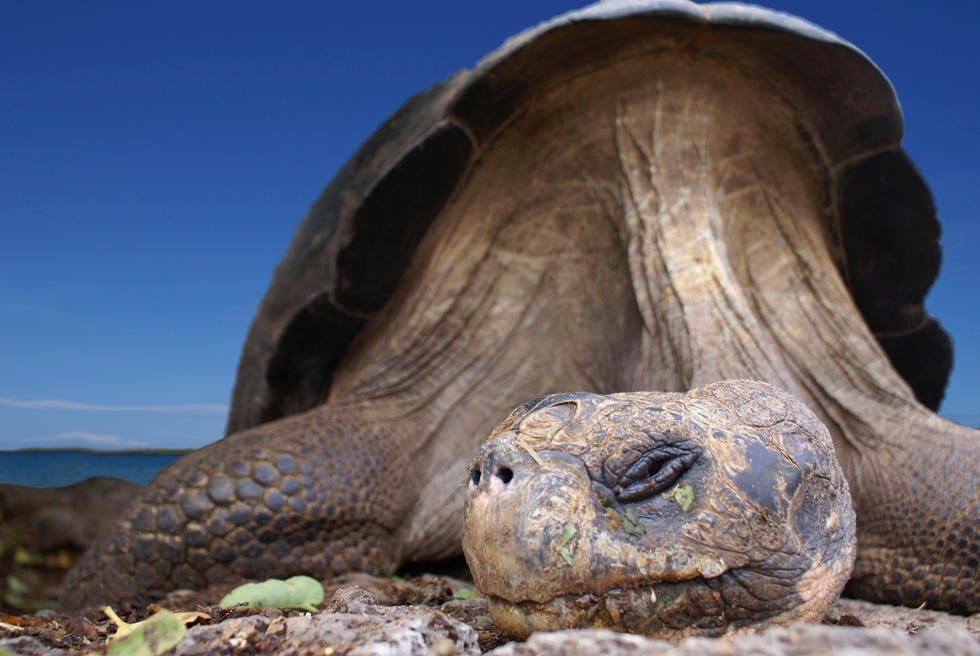

La isla Santa Cruz, es un isla ecuatoriana en el océano pacífico, que forma parte del archipiélago de las islas Galápagos siendo la segunda más grande del conjunto de islas tras la isla Isabela, y situada en el centro de las islas. Posee una población de alrededor de 15 000 habitantes, una altitud máxima de 864 msnm.
Forma el Cantón de Santa Cruz, siendo su capital la localidad de Puerto Ayora, una de las ciudades más pobladas del conjunto, existen otros pequeños poblados en la isla, trabajando la mayoría de sus habitantes en la agricultura de pequeña escala.
Llamada en honor a la Cruz de Cristo, su nombre en inglés es el de un barco inglés de dicho nombre. Tiene una superficie de 986 km². La Estación Científica Charles Darwin y las oficinas centrales del Servicio del Parque Nacional están ubicadas aquí. En el SPNG opera un centro de crianza de tortugas donde estos quelonios son preparados para su reintroducción en su hábitat natural. La “parte alta” de Santa Cruz tiene una exuberante vegetación y es famosa por los túneles de lava. Una gran población de tortugas habita esta región. Caleta Tortuga Negra es un área rodeada de manglar en donde tortugas marinas, rayas y pequeños tiburones utilizan como lugar de apareamiento.
La isla San Cristóbal, está ubicado en el extremo sureste de las islas Galápagos, y es considerado como una de las islas más visitadas del archipiélago, ya que posee un aeropuerto y una amplia gama de sitios y lugares turísticos.
La isla San Cristóbal tiene playas con arena blanca, un mar de color cielo, como también interesantes puntos de observación de vida silvestre, surfing, buceo y demás actividades acuáticas turísticas.
La capital de la Provincia de Galápagos es Puerto Vaquerizo Moreno, la cual tiene mucha población y n su zona está situada la Universidad San Francisco. La ciudad Puerto Vaquerizo Moreno está totalmente desarrollada, la cual posee una variedad de restaurantes, tiendas y hoteles.
Puerto Vaquerizo Moreno tiene acceso a una serie de playas como, Playa Cabo del Horno, el Hombre Playa y Playa de Oro.
En 1831, un joven Charles Darwin de 22 años se enroló en la expedición del HMS Beagle porque el capitán Robert Fitz Roy consideraba útil contar con un geólogo en su expedición para cartografiar las costas de Sudamérica, entre otras tareas. Durante la ya legendaria vuelta al mundo de cinco años del Beagle, las dos semanas que Darwin dedicó a explorar por su propio pie las islas Galápagos acabaron siendo fundamentales para que el científico acabara sentando las bases de una teoría que revolucionó la ciencia y el conocimiento existente.
Este archipiélago situado en el océano Pacífico, a 972 km de las costas ecuatorianas, está formado por 19 islas y es una de las regiones volcánicas más activas del mundo. Además, su biodiversidad y sus paisajes son un auténtico espectáculo de la naturaleza. Refugio de los piratas que abordaban a las flotas reales españolas durante siglos, las islas siempre habían estado envueltas por un halo de misterio hasta la llegada de la expedición Malaspina, que fue la primera con fines científicos que se acercó a las islas en 1790. La llegada de Darwin se produjo en 1835, tres años después de que fueran anexionadas a Ecuador, y desde entonces este pequeño archipiélago ha alcanzado una fama universal.
Sin ser consciente de ello en su momento, los trabajos de Darwin también para que con los años se reconozca el gran valor ecológico de las islas Galápagos y se hayan convertido en un parque natural patrimonio de la Humanidad, por ello, en el archipiélago son constantes los homenajes a su figura.